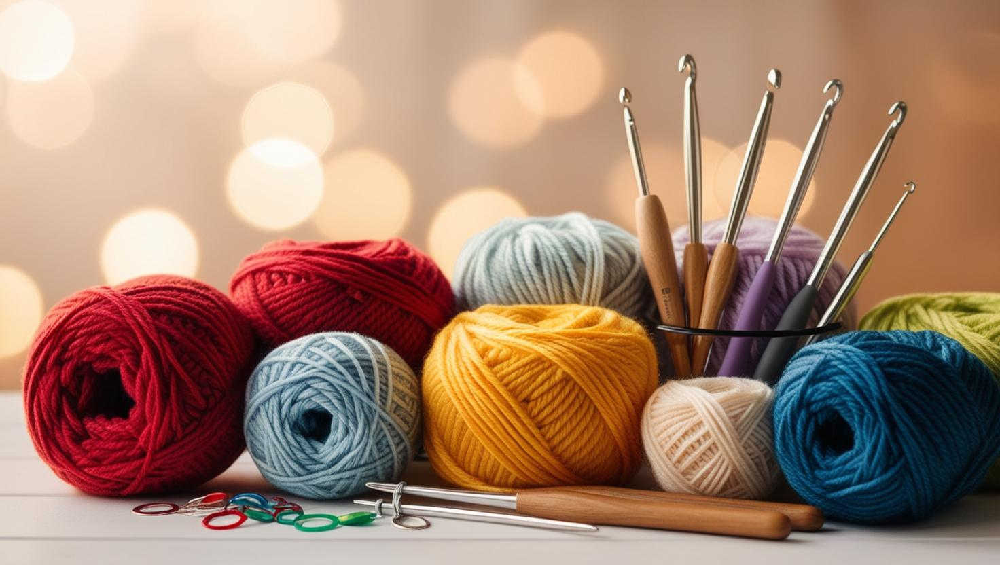

>
- Crochets. There are a lot of size available but the smaller the size, the harder it is. For me, size 5mm is the easiest to start.
- Yarn. There are a lot of type of yarns to, different size, colors etc. To start I would recommend coton as it tends to be easier to knit. You can see the size of the hook you need to yarn no the label of the yarn.
- Some stitch marker. At first it will be really handy to be sure you have made the right amount of stitches in each row
- Yarning needles. You will need them to hide the yarn at the end of your project.
- Cissors. You will often have to cut you yarn, it's easier to have it with you at all time.
There are so much more items you can buy to make your crochet experience easier and more fun. But with those 5 items, you can start and make a lot of things.
